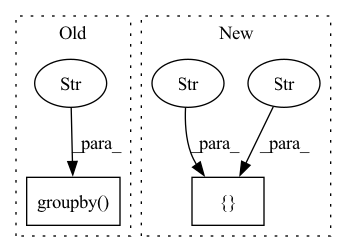

Pattern ID :1730

Before Change
result[["name-string", "name-string_x_min"]]
.drop_duplicates()
.sort_values("name-string")["name-string_x_min"],
df0.groupby("name-string").agg({"x": "min"})["x"],
check_index=False,
check_names=False,
)
After Change
expect = df0.sort_values(["label", "x", "y", "id"]).reset_index(drop=True).reset_index()
got = result.sort_values(["label", "x", "y", "id"]).reset_index(drop=True).reset_index()
gb_e = expect.groupby("name-cat").aggregate({"name-cat": "count", "x": ["sum", "min", "std"]})
gb_e.columns = ["count", "sum", "min", "std"]
df_check = got.merge(gb_e, left_on="name-cat", right_index=True, how="left")
assert_eq(df_check["name-cat_count"], df_check["count"].astype("int64"), check_names=False)
assert_eq(df_check["name-cat_x_sum"], df_check["sum"], check_names=False)
In pattern: SUPERPATTERN
Frequency: 3
Non-data size: 2
Instances
Fragment ID: 8149628
Project Name: nvidia/nvtabular
Commit Name: 8cb492e153ceb0bb56d95a311e43b9f30f39a7b1
Time: 2021-02-08
Author: rzamora217@gmail.com
File Name: tests/unit/test_dask_nvt.py
M Class Name: AnonimousClass
N Class Name: AnonimousClass
M Method Name: test_dask_groupby_stats(4)
N Method Name: test_dask_groupby_stats(4)
M Parent Class:
N Parent Class:
M File Name: tests/unit/test_dask_nvt.py
N File Name: tests/unit/test_dask_nvt.py
M Start Line: 135
M End Line: 185
N Start Line: 130
N End Line: 160
'>
Before Change
logs = pd.concat(all_logs)
fig, ax = plt.subplots()
for name, group in logs.groupby("uid"):
group.plot.line(x="epoch", y="top_1", ax=ax)
plt.show()
After Change
plot_all(x="epoch")
plot_all(x="relative_time")
for chungus in ["delta", "training.lr", "training.weight_decay",
"resolution.max_res", "resolution.min_res"]:
plot_all(x="relative_time", by_col=chungus)
plot_all()
'>
Fragment ID: 8149533
Project Name: libffcv/ffcv
Commit Name: 42c1f93136351919b3727e42cbf1857966d5f750
Time: 2021-11-11
Author: engstrom@csail.mit.edu
File Name: examples/imagenet_collect.py
M Class Name: AnonimousClass
N Class Name: AnonimousClass
M Method Name: main(1)
N Method Name: main(1)
M Parent Class:
N Parent Class:
M File Name: examples/imagenet_collect.py
N File Name: examples/imagenet_collect.py
M Start Line: 45
M End Line: 55
N Start Line: 46
N End Line: 84
'>
Before Change
// Check category counts
cat_expect = df0.groupby("name-string").agg({"name-string": "count"}).reset_index(drop=True)
cat_result = (
result.groupby("name-string").agg({"name-string": "count"}).reset_index(drop=True)
)
if freq_threshold:
cat_expect = cat_expect[cat_expect["name-string"] >= freq_threshold]
After Change
// Check categories. Need to sort first to make sure we are comparing
// "apples to apples"
expect = df0.sort_values(["label", "x", "y", "id"]).reset_index(drop=True).reset_index()
got = result.sort_values(["label", "x", "y", "id"]).reset_index(drop=True).reset_index()
dfm = expect.merge(got, on="index", how="inner")[["name-string_x", "name-string_y"]]
dfm_gb = dfm.groupby(["name-string_x", "name-string_y"]).agg(
{"name-string_x": "count", "name-string_y": "count"}
'>
Fragment ID: 8149838
Project Name: nvidia/nvtabular
Commit Name: 8cb492e153ceb0bb56d95a311e43b9f30f39a7b1
Time: 2021-02-08
Author: rzamora217@gmail.com
File Name: tests/unit/test_dask_nvt.py
M Class Name: AnonimousClass
N Class Name: AnonimousClass
M Method Name: test_dask_workflow_api_dlrm(9)
N Method Name: test_dask_workflow_api_dlrm(9)
M Parent Class:
N Parent Class:
M File Name: tests/unit/test_dask_nvt.py
N File Name: tests/unit/test_dask_nvt.py
M Start Line: 65
M End Line: 127
N Start Line: 55
N End Line: 122